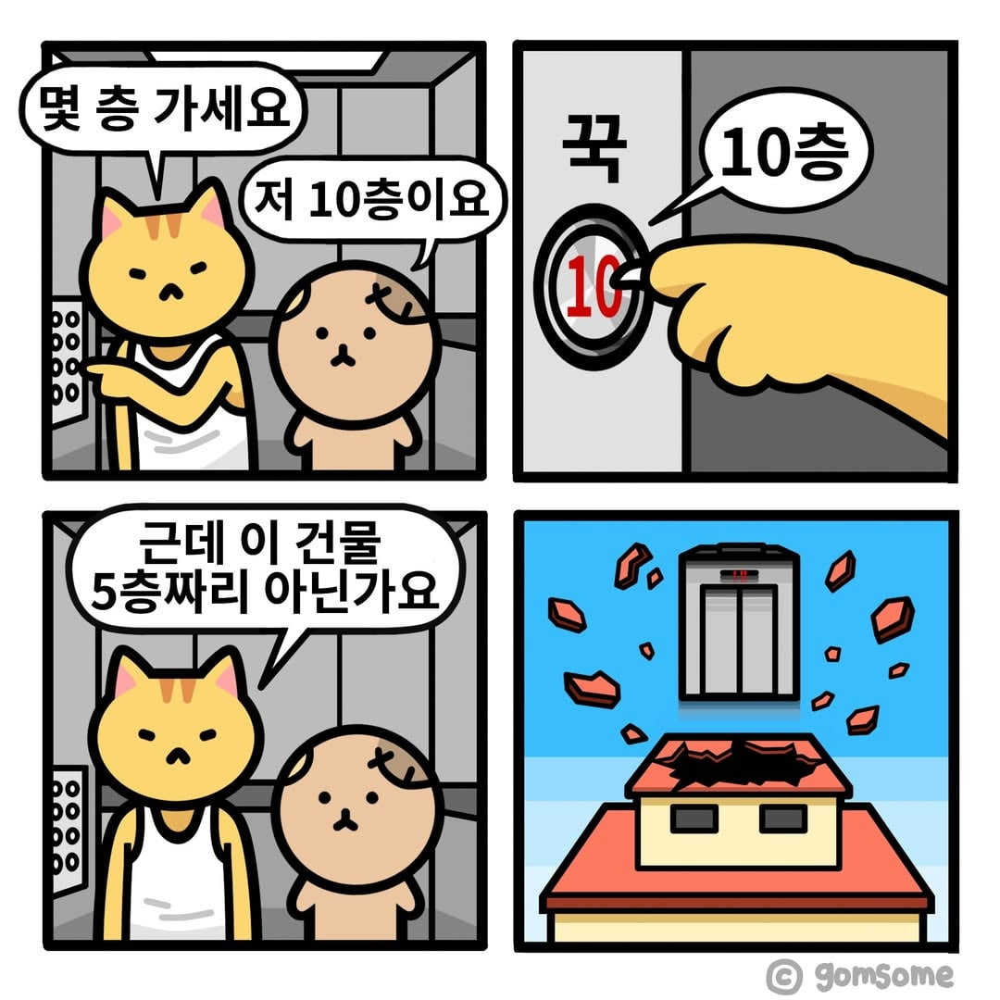
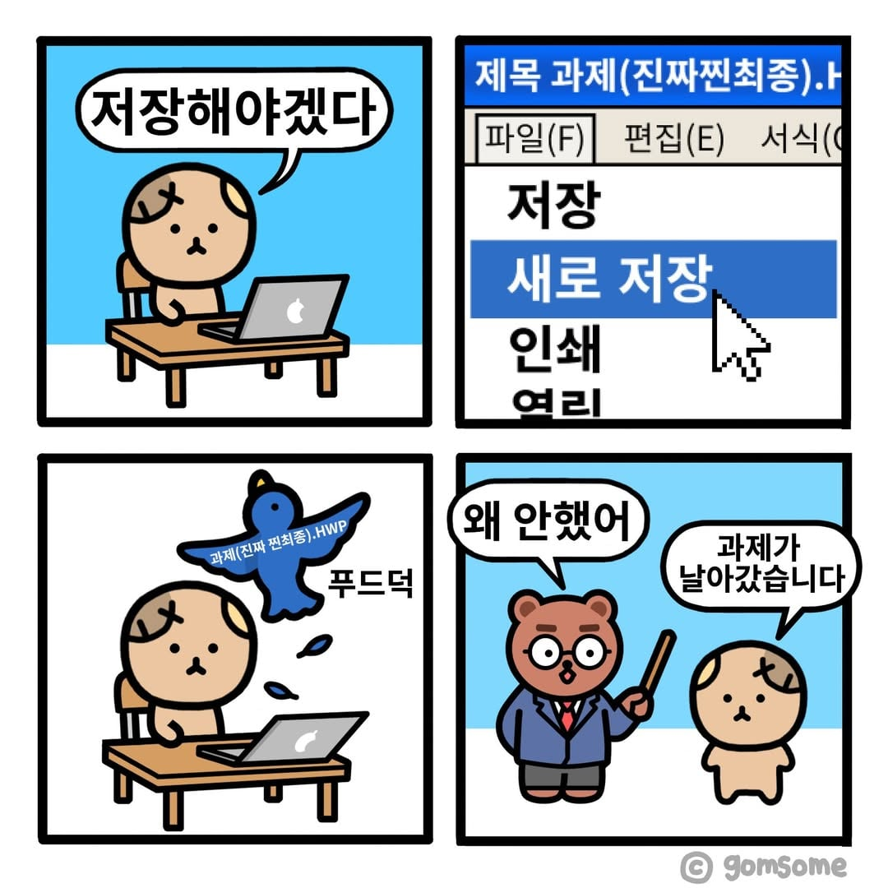

출처: @gomsome


출처: @gomsome
다른이름으로 저장을 했어야지
교수 : 왜 과제 안해왔어!
?? : 저장 했는데 과제 작성자 이름이 다른 이름으로 바꼈어요...
'다른이름'
제목과제[찐찐막].hwp
>>
Solridmemoripower.ork
과제 : 누구세요?
왜 과제 안했어!!
이번 과제는 다른이름 친구가 아주 잘 했다.
수업 끝나고 교수실 와서 커피 한 잔 하자잉
러키곰스타감성
요즘 엑셀이랑 PPT 저장할떄 좆같은거
다름이름으로저장 창 바로 뜨게하는 방법 없음?
회사에서 저장할떄마다 마우스에 손가게 되는ㄷ거 좆같은데
F12 누르면 됨
새로 만들기
저장
다른 이름으로 저장
새로저장이 어딨어
저기있네
ㅡ,.ㅡ
첫쩔 엘리베이터 버튼을 열쇠나 날카로운걸로 누르면 손상된다.
ㅋㅋㅋㅋㅋㅋ
애매한데

너 재능없어
마지막 시발 ㅋㅋㅋㅋㅋ
나는 한글의 블록저장이 싫었어
재밌네 ㅎㅎ